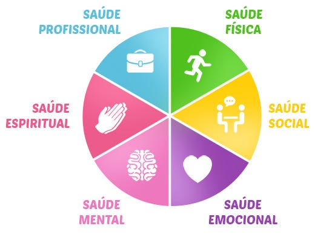

A qualidade de vida é um conceito que se refere à percepção individual sobre o seu nível de bem-estar e satisfação com as condições de vida, incluindo fatores como saúde, relacionamentos, ambiente de trabalho e recursos materiais“Ao buscarmos uma melhor qualidade de vida, estamos buscando a saúde no seu mais amplo sentido de saúde física – ausência de doença; boa saúde mental, com bom controle da ansiedade, depressão etc. e um bom relacionamento com familiares, amigos, na escola e no trabalho.
A qualidade de vida não se limita apenas à saúde física, mas também abrange a saúde mental, o bem-estar emocional e a capacidade de desenvolver relações sociais significativas. É o conjunto de condições que contribuem para o bem-estar de um indivíduo, como acesso a recursos essenciais, oportunidades de educação e trabalho, e um ambiente de vida seguro e confortável. Pode ser melhorada por meio de hábitos saudáveis, atividades físicas, lazer, gestão do tempo e outros fatores.